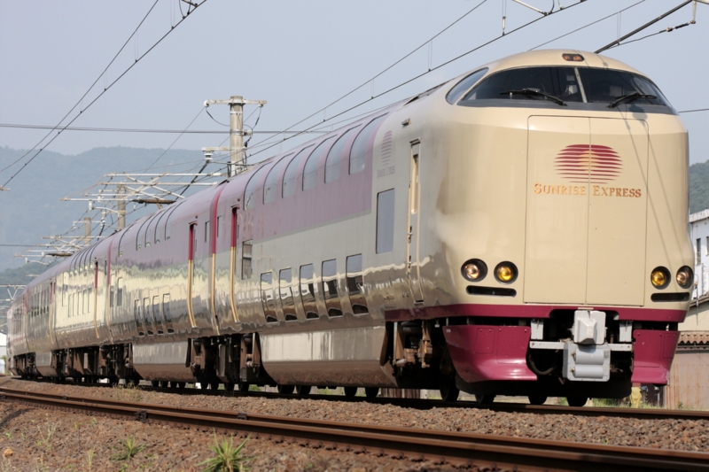
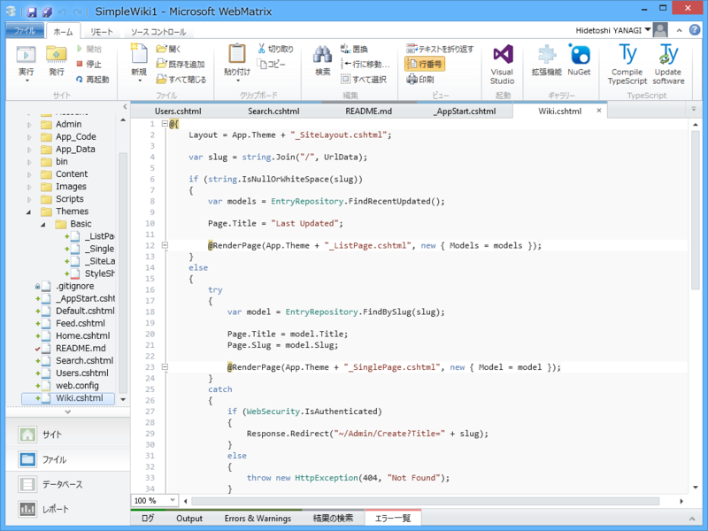

2015年の目標
公開日：
平日はビールを飲まない
ただし、飲みに誘われた場合や、お仕事を頑張ったご褒美として飲む場合、またはどうしても体が欲している場合（ビールが飲みたくて獅子が痙攣する etc）などは除く。
年末年始は関西へ行った折、会う人会う人、みんなに「太った」と言われて凹んだが、ビールを減らしさえすれば、シュッとなるはず。
九州のプロ生に行く
去年「行く」と宣言しておきながら、国際だるやなぎ会議、無事に終わりました！ - だるろぐ を優先してしまい、行かずじまいだった。大変申し訳ないので、今年も開催されるならばぜひ行きたいと思う。
あと、今年も松山で勉強会したいね。去年ほどは盛り上がらないかもしれないけどｗ
お金を貯める
今年はお祝い事が続いたせいもあり、出費がキツかった。今年はちょっと引き締めていきたいなと思う。――というわけで、今年も結婚しないだろう。
寝台列車乗る

生まれて一度も乗ったことないので、乗ってみたい。いつか乗ろうと思っているうちに、ずいぶん廃止されて減ってしまった。
四国の場合は、サンライズ瀬戸（高松－東京）というのがあるらしいのだけど、どこで予約すればいいんだろう？
WebMatrix で Wiki を作ってみたという Wiki を WebMatrix で作る

一度このブログで連載しようと思っていたのだけど挫折したが、去年の暮れ、ちょっとした Wiki エンジンのようなものを作ることができたので、その過程をそのエンジンで書こうと思う。そろそろ WebMatrix はオワコンだろうし、わざわざそんなものを書く意味もあまりないように感じるが、まぁ、そういうプロダクトもあったんだよ、割と便利だったんだよと、歴史家の視点で何かを残せればいいなと思う。
BeOS のときは、あれだけ大好きだったのにそういうことができずに少し悲しく思ったので。
共和主義研究
去年サボった（本は読んだけど、アウトプットはあまりしなかった）ので、今年は頑張る。